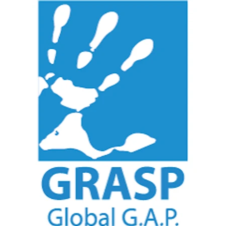
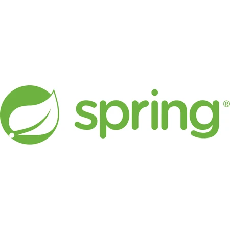
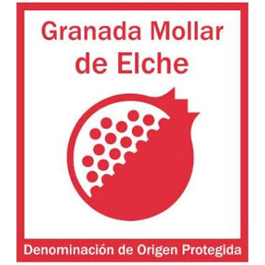

Certificaciones de calidad
Contamos con certificaciones que garantizan la calidad, la trazabilidad y la seguridad de cada uno de nuestros procesos. Nuestro compromiso con la excelencia nos impulsa a superar los estándares del sector.
Auditados, aprobados, reconocidos
Creemos que la calidad debe verificarse y validarse. Por eso invertimos en obtener y mantener certificaciones que demuestran nuestra adhesión a los estándares internacionales y a las mejores prácticas.



GlobalG.A.P.
Buenas Prácticas AgrícolasIncluye los add-on GRASP y SPRINGPrograma de aseguramiento agrícola que traduce las exigencias del consumidor en buenas prácticas: producción segura y sostenible, uso responsable de los recursos y bienestar y seguridad de los trabajadores.

BRCGS Food Safety
Norma Global de Seguridad AlimentariaUno de los estándares globales más exigentes en seguridad alimentaria, usado por más de 28.000 proveedores en 130 países: sistemas integrales de seguridad alimentaria, control riguroso de instalaciones y procesos, trazabilidad y competencia del personal.

IFS Food
Gestión de Calidad y Seguridad AlimentariaEstándar reconocido internacionalmente que garantiza la seguridad, calidad y legalidad del producto mediante controles exhaustivos en cada etapa, trazabilidad integral y mejora continua.

DOP Granada Mollar de Elche
Denominación de Origen ProtegidaNuestra Granada Mollar de Elche cuenta con la DOP, que garantiza producción auténtica en la región, métodos tradicionales, características únicas y protección frente a imitaciones.
Módulos “add-on” de nuestra certificación GlobalG.A.P.
GRASP y SPRING son módulos add-on voluntarios de GlobalG.A.P. que amplían el estándar a las prácticas sociales y al uso responsable del agua.
GRASP
GlobalG.A.P. Risk Assessment on Social PracticesEvalúa las prácticas sociales en el campo: condiciones laborales justas y seguras, cumplimiento de la normativa laboral y prácticas empresariales éticas.
SPRING
Sustainable Program for Irrigation and Groundwater UseVerifica el riego sostenible y la gestión responsable del agua subterránea: uso eficiente, legalidad de la extracción y protección del recurso.
Nuestro proceso de certificación
Preparación
Alineamos nuestros sistemas de gestión con los requisitos de certificación.
Auditoría interna
Verificamos el cumplimiento de los estándares antes de la auditoría externa.
Auditoría externa
Auditores independientes revisan nuestras instalaciones y procesos.
Mejora continua
Mantenemos las certificaciones con monitorización y mejora constantes.
Sellos que nos avalan
¿Quieres nuestros certificados?
Cuéntanos volumen, formato y mercado. Te respondemos a la mayor brevedad posible con una propuesta a medida.
Solicitar oferta →